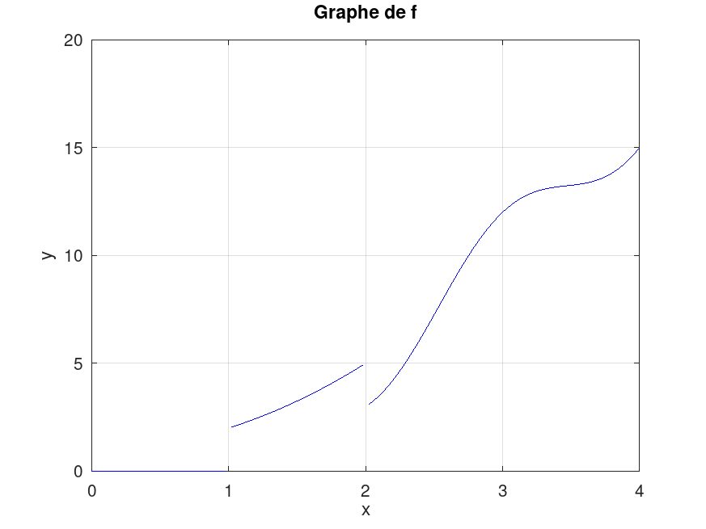
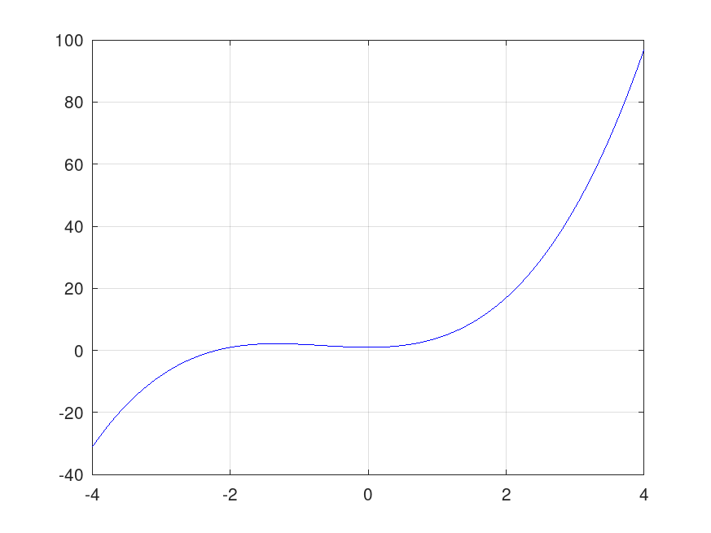
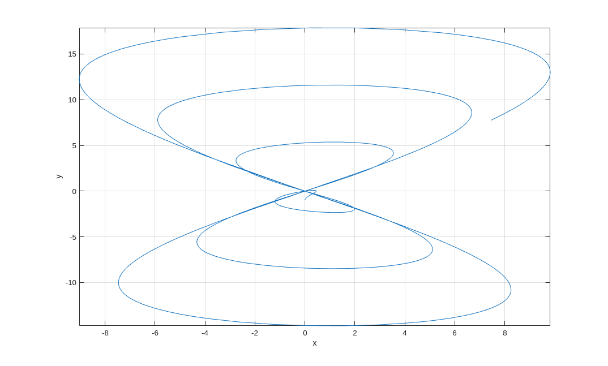
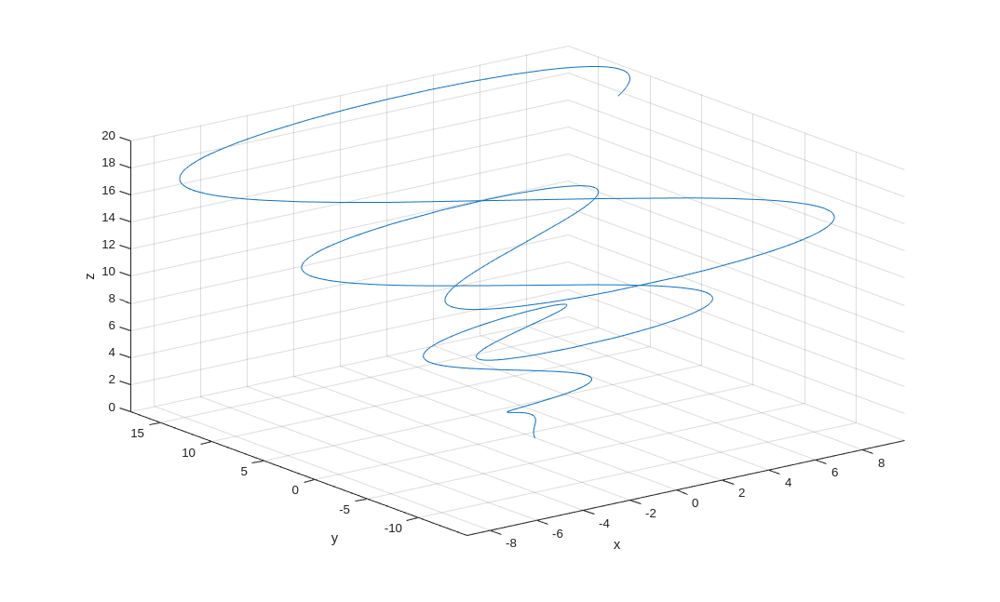
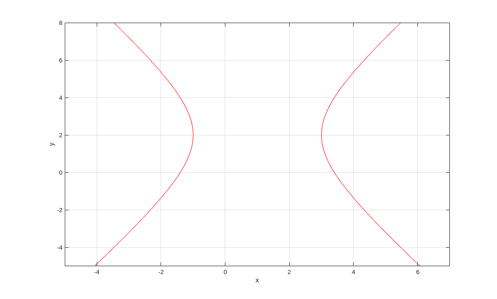
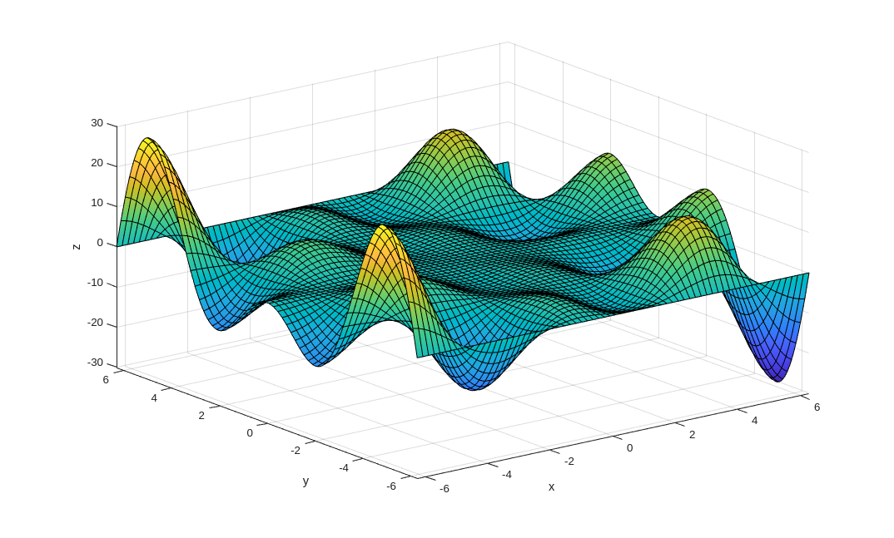
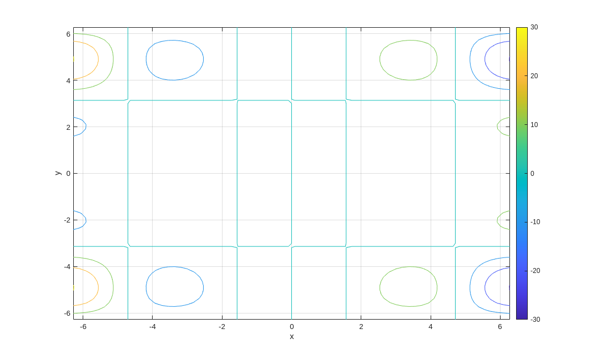
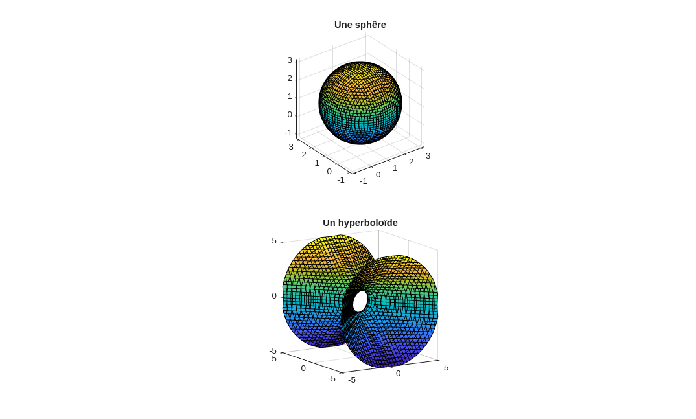

Matlab offre une grande collection de fonctions mathématiques prédéfinies. Il est aussi facile de créer nos propres fonctions. Ce document explique comme créer des fonctions. C'est le premier pas vers la programmation dans Matlab.
Exemple: L'exemple suivant explique comment créer la fonction funct1 qui est définie par \(x \mapsto x \sin(x)\).
Premièrement, un fichier nommé funct1.m est créé à l'aide d'un éditeur de texte ascii. La première ligne contient l'énoncer function y = funct1(x), la deuxième ligne contient la formule y = x.*sin(x); et la dernière ligne l'énoncer end. Il n'y a rien de plus à ajouter à ce fichier.
Nous pouvons ajouter des commentaires au fichier m ci-dessus. Le texte qui suit le caractère % sur une ligne est ignoré par Matlab.
Voici le contenue du fichier m .
% y = funct1(x)
%
% This function takes one argument x and returns the result of the
% computation x sin(x)
function y = funct1(x)
y = x.*sin(x);
end
Note: le fichier funct1.m peut être téléchargé en cliquant avec le bouton droit de la souris sur le lien précédent et ensuite en choisissant Save link as ... → Save file .
Si le fichier funct1.m est dans le répertoire à partir duquel Matlab a été démarré ou dans un répertoire inclus dans la liste des répertoires que Matlab lie au départ (voir le menu de Matlab), alors notre nouvelle fonction funct1 peut être utilisée comme toutes les autres fonctions de Matlab comme on le démontre dans l'exemple suivant.
Exemple: La valeur de \(x \sin(x)\) pour \(x=5\) est donnée par la commande suivante.
>> funct1(5)
ans = -4.7946
La première ligne d'un fichier m qui défini une fonction a le format suivant.
Le reste du fichier m définit la fonction en utilisant la même syntaxe que celle utilisée dans la fenêtre de commandes. Le point-virgule est nécessaire à la fin de chaque ligne autrement le résultat de la ligne sera affiché à chaque fois que le fichier m est exécuté. Il est fortement suggéré d'utiliser .* au lieu de *, ./ au lieu de /, etc pour créer une fonction qui est array smart.
Le nom du fichier m qui définie la fonction nom_de_la_fonction doit être nom_de_la_fonction.m. Le nom de la fonction doit satisfaire les règles suivantes:
Les fichiers m peuvent être sauvegardés dans n'importe lequel des répertoires. Cependant, Matlab doit savoir où les fichiers m se trouvent. Matlab a une liste de l'emplacement des répertoires où il cherche les fichiers m. Pour vérifier si l'emplacement d'un répertoire contenant un fichier m est parmi la liste des répertoires que Matlab cherche pour les fichiers m, il suffit d'exécuter la commande path. Matlab affiche alors l'emplacement de tous les répertoires qu'il cherche. Le répertoire où un fichier m est sauvegardé peut être ajouté à la liste des répertoires cherchés par Matlab, s'il n'est pas déjà présent, à l'aide des commandes path(path, 'emplacement') ou addpath emplacement, où emplacement est l'emplacement complet du répertoire où le fichier m se trouve. Par exemple, supposons que le fichier m funct1.m se trouve dans le répertoire /home/utilisateur1/matlab, alors la commande path(path,'/home/utilisateur1/matlab') ajoute l'emplacement /home/utilisateur1/matlab à la liste des répertoires que Matlab cherche s'il n'est pas déjà inclus dans la liste.
La commande help nom_de_la_fonction affiche les lignes (le premier groupe de lignes) qui débute par % et qui se trouvent avant la ligne function variables_dépendantes = nom_de_la_fonction(variables_indépendantes) du fichier nom_de_la_fonction.m. Un fichier m devrait toujours débuter avec des commentaires qui décrivent la fonction définie dans le fichier m, qu'est-ce que la fonction fait, et comment utiliser cette fonctions avec la liste et description de ses arguments.
Exemple:
>> help funct1 y = funct1(x)
This function takes one argument x and returns the result of the computation x sin(x)
Pour certaines fonctions de Matlab, le nom d'une fonction doit être donné parmi leurs arguments. Par exemple, la fonction quadl que l'on a introduite précédemment exige que le nom de la fonction qui doit être intégrée soit un des arguments. Au lieu de donner le nom de la fonction, il est souvent plus pratique de donner l'anse de la fonction. L'anse d'une fonction est une sorte d'adresse de la fonction.
Pour obtenir l'anse d'un fonction, il suffit d'ajouter le préfixe @ au nom de la fonction. Par exemple, @funct1 donne l'anse de la fonction funct1 .
L'anse d'une fonction peut être utilisée au lieu du nom de la fonction qu'elle représente.
Exemple: Les commandes suivantes illustrent comment l'anse d'une fonction peut être manipulée et utilisée.
>> format long >> hand = @funct1; >> hand(10)
ans = -5.440211108893697 >> funct1(10)
ans = -5.440211108893697 >> hands = {hand, @sin}; >> hands{1}(10)
ans = -5.440211108893697 >> hands{2}(10)
ans = -0.544021110889370
hand contient l'anse de la fonction funct1. Ainsi, hand(10) est identique à la commande funct1(10). La variable hands représente une liste (ordonnée) de deux anses: l'anse de la fonction funct1 et l'anse de la fonction sin de Matlab qui est la fonction trigonométrique sinus. hands{1}(10) est équivalent à la commande funct1(10) et hands{2}(10) est équivalent à la commande sin(10).
Il est occasionnellement fastidieux de créer un fichier m pour définir une simple fonction qui sera utilisée seulement lors d'une session sur Matlab. L'anse d'une fonction peut être utilisée pour éliminer le besoin de créer un fichier m.
Exemple: Nous voulons évaluer la fonction \(\displaystyle f(x) = x^3 + 2 x^2 + 1\) pour plusieurs valeurs de \(x\).
Au lieu de créer un fichier m pour la fonction \(f\), nous définissons une fonction anonyme qui est seulement représentée par son anse que nous sauvegardons dans une variable comme il est fait ci-dessous.
>> f = @(x) x.^3 + 2* x.^2 + 1
f = function_handle with value: @(x) x .^ 3 + 2 * x .^ 2 + 1
Nous pouvons exécuter les opérations suivantes.
>> f(5) , sqrt(f(4)), f(4) + f(5)
ans = 176 ans = 9.848857801796104 ans = 273
Exemple: Nous utilisons Matlab pour tracer le graphe de la fonction \(f\) définie par \(f(x) = (x^2+1) H(x-1) -2 \cos(\pi x) H(x-2)\) sur l'intervalle \([0,4]\), où le fonction \(H\) est la fonction de Heaviside.
La fonction de Heaviside prend la valeur 1 si son argument est un nombre positif, elle prend la valeur 0 si son argument est un nombre négatif, et elle n'est pas définie à l'origine. Matlab et Octave ont une fonction heaviside prédéfinie dans leur boite à outils symbolique (sic). Nous prenons pour acquis que cette boite à outils n'a pas été installée. Donc, nous définissons en premier la fonction Heaviside heaviside.
Voici le contenu du fichier m .
% Y = heaviside(X) % % This function accept a matrix X as argument and evaluate the % Heaviside function at each of the components of X. % The Heaviside function is defined as 1 if the argument is a positive % number, 0 if the argument is a negative number, and NaN if the % argument is 0. function Y = heaviside(X) Y = (sign(X)+1)/2; Y(Y == 1/2) = NaN; end
Cette définition de la fonction heaviside peut paraître excessivement compliquée mais notre but était de créer une fonction qui soit array smart pour prendre avantage de l'optimisation de Matlab. Comme il se doit, nous avons les résultats suivants.
>> X = [ 1 -2 0 3];
>> heaviside(X)
ans =
[ 1 0 NaN 1 ]
Nous pouvons maintenant définir la fonction \(f\) et tracer son graphe avec la fonction fplot de Matlab.
>> f = @(x) (x.^2+1).*heaviside(x-1) - 2*cos(pi*x).*heaviside(x-2); ...
x = 0:0.02:4; ...
y = f(x); ...
plot(x,y,'b'); ...
grid on, xlabel('x'), ylabel('y'), ...
title('Graphe de f')

Remarque: Nous avons vu dans l'exemple portant sur le
dessin du cadre d'une boite dans le document
que nous pouvons utiliser un point avec les coordonnées
[NaN NaN NaN] pour briser une courbe
continue. Cette technique a aussi été utilisée dans l'exemple
précédent pour briser le graphe de la fonction \(f\).
Puisque la fonction de Heaviside prend la valeur
NaN à l'origine, nous avons que
\(f\) prend la valeur
NaN à 1 et 2.
Nous avons choisi un maillage x qui
contient les points 1 et 2.
Donc, aucune ligne est tracée entre \( (1,f(1-)) \) et \( (1,f(1+)) \),
et entre \( (2,f(2-)) \) et \( (2,f(2+)) \).
Pour obtenir une meilleure appréciation du rôle que NaN joue, nous considérons la fonction \(f(x) = (x^2+1) F(x-1) -2 \cos(\pi x) F(x-2)\) sur l'intervalle \([0,4]\), où \(F(x) = (\text{sgn}(x)+1)/2 \). Nous avons que \(F(x) = 0 \) pour \(x < 0\), \(F(x) = 1\) pour \(x >0\), et \(F(0) = 1/2\). Si nous utilisons les commandes
>> f = @(x) (x.^2+1).*((sign(x-1)+1)/2) - 2*cos(pi*x).*((sign(x-2)+1)/2); ... x = 0:0.01:4; ... y = f(x); ... plot(x,y,'b'); ... grid on;
nous n'obtenons pas le graphe d'une fonction. Il y a des lignes verticales où il devrait y avoir un seul point. Pour tracer le graphe de \(f\), nous devons utiliser des commandes comme celles qui suivent.
>> f = @(x) (x.^2+1).*((sign(x-1)+1)/2) - 2*cos(pi*x).*((sign(x-2)+1)/2); ... x = 0:0.02:0.99; ... y = f(x); ... plot(x,y,'b'); ... hold on; ... x = 1.01:0.02:1.99; ... y = f(x); ... plot(x,y,'b'); ... x = 2.01:0.02:4; ... y = f(x); ... plot(x,y,'b'); ... plot(1,f(1),'.b'); ... plot(2,f(2),'.b'); ... grid on;
Les fonctions suivantes pour manipuler les anses de fonctions sont parfois utiles.
| Commande | Description |
|---|---|
| functions(anse) | Affiche la description de la fonction associée à l'anse fournie comme argument. |
| func2str(anse) | Affiche le nom de la fonction associée à l'anse fournie comme argument ou, si l'anse est associée à une fonction anonyme, la formule qui définie la fonction. |
| str2func('nom_de_la_fonction') | Fournie l'anse de la fonction qui porte le nom nom_de_la_fonction. |
| isa(variable. 'function_handle') | Retourne 1 (ou vrai) si la variable fournie comme premier argument contient une anse et 0 (ou faux) si cette variable ne contient pas une anse. |
Nous avons mentionné au début du document . qu'il existait des versions des fonctions plot, surf, plot3, contour, ... qui acceptent pour arguments les fonctions que nous définissons. Nous fournissons des exemples de ces nouvelles fonctions graphiques ci-dessous.
Exemple: Nous pouvons utiliser la fonction fplot de Matlab pour tracer le graphe de la fonction \(\displaystyle f(x) = x^3 + 2 x^2 + 1\) que nous avons considérée dans un exemple précédent.
>> close >> f = @(x) x.^3 + 2*x.^2 + 1; ... fplot(f,[-4,4],'b', MeshDensity=100); ... grid on

Conseil: La méthode qui utilise la
valeur
NaN pour briser le
graphe d'une fonction
ne fonctionne pas avec fplot car il n'est
pas possible de garantir que les points où la fonction est discontinue
sont inclus dans le maillage choisi par fplot.
Donc, pour les fonctions qui sont discontinues, il est préférable
d'utiliser la fonction plot et de
choisir le maillage nous-mêmes comme nous avons fait dans un exemple
ci-dessus.
Nous avons considéré la fonction \(f(x) = (x^2+1) H(x-1) -2 \cos(\pi x) H(x-2)\) dans un exemple précédent. Le lecteur devrait exécuter les commandes suivantes.
>> f = @(x) (x.^2+1).*heaviside(x-1) - 2*cos(pi*x).*heaviside(x-2); ... fplot(f,[0,4],'b', MeshDensity=100); ... grid on;
Sur notre ordinateur, il y a une ligne verticale à \(x=1\) car le point 1 n'est pas inclus dans le maillage choisi par fplot. Le lecteur devrait varier la densité du maillage pour voir ce qui arrive.
Exemple: Nous utilisons Matlab pour tracer la courbe donnée par la représentation paramétrique \( (x,y) = (t \sin(t) \cos(t), (t-1)\cos(t)) \) pour \(0 \leq t \leq 20 \).
>> f = @(t) t.*sin(t).*cos(t); ...
g = @(t) (t-1).*cos(t); ...
fplot(f,g,[0,20]); ...
grid on, xlabel('x'), ylabel('y')

La fonction dans Octave qui peut remplacer fplot dans le cas présent est ezplot.
Exemple: Nous utilisons Matlab pour tracer la courbe donnée par la représentation paramétrique \( (x,y,z) = (t \sin(t) \cos(t), (t-1)\cos(t), t) \) pour \(0 \leq t \leq 20 \).
>> f = @(t) t.*sin(t).*cos(t); ...
g = @(t) (t-1).*cos(t); ...
h = @(t) t; ...
fplot3(f,g,h,[0,20]); ...
grid on, xlabel('x'), ylabel('y'), zlabel('z')

La fonction de Octave qui peut remplacer fplot3 dans le cas présent est ezplot3.
Exemple: Nous pouvons dessiner des courbes définies implicitement. Par exemple, nous pouvons tracer la courbe définie par l'équation \( 9x^2 - 4 y^2 - 18 x + 16 y = 43 \).
>> h = @(x,y) 9*x.^2 -4*y.^2 - 18*x +16*y - 43; ...
fimplicit(h,[-5 7 -5 8],'r'); ...
xlabel('x') , ylabel('y'), grid on

La fonction dans Octave qui peut remplacer fimplicit dans le cas présent est ezplot.
Exemple: Nous utilisons Matlab pour dessiner le graphe de la fonction \(f\) définie par \( f(x,y) = x y \sin(y) \cos(x) \) pour \(-2\pi \leq x,y \leq 2 \pi \).
>> f = @(x,y) x.*y.*sin(y).*cos(x); ...
fsurf(f,[-2*pi 2*pi -2*pi 2*pi],'MeshDensity', 70); ...
grid on, xlabel('x'), ylabel('y'), zlabel('z')

Nous pouvons aussi tracer des courbes de niveau de \(f\).
>> fcontour(f,[ -2*pi 2*pi -2*pi 2*pi],'MeshDensity', 70); ...
grid on, xlabel('x'), ylabel('y'), ...
colorbar

Nous pouvons même choisir les courbes de niveau de \(f\) que nous voulons tracer.
>> fcontour(f,[ -2*pi 2*pi -2*pi 2*pi], 'LevelList', [-1 0 1]); ...
grid on, xlabel('x'), ylabel('y')
Les fonctions fsurf et fcontour ne sont pas encore présentes dans Octave.
Exemple: Nous pouvons aussi dessiner des objets géométriques en trois dimensions. Par exemple, nous pouvons dessiner une sphère de rayon 2 centrée au point \( (1,1,1)\) et l'hyperboloïde \( x^2 + z^2 - y^2 = 1\).
>> F1 = @(x,y,z) (x-1).^2 + (y-1).^2 + (z-1).^2 -4; ...
F2 = @(x,y,z) x.^2 + z.^2 - y.^2 -1; ...
subplot(2,1,1); ...
fimplicit3(F1); ...
title('Une sphêre'); ...
axis('equal'), grid on; ...
subplot(2,1,2); ...
fimplicit3(F2); ...
title('Un hyperboloïde'); ...
axis('equal'), grid on;
